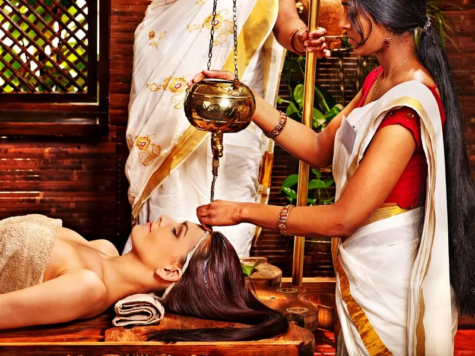
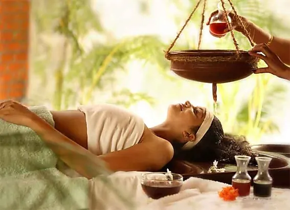
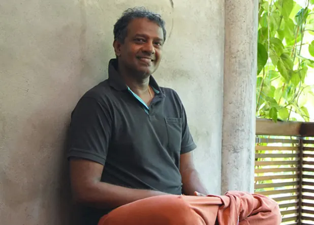
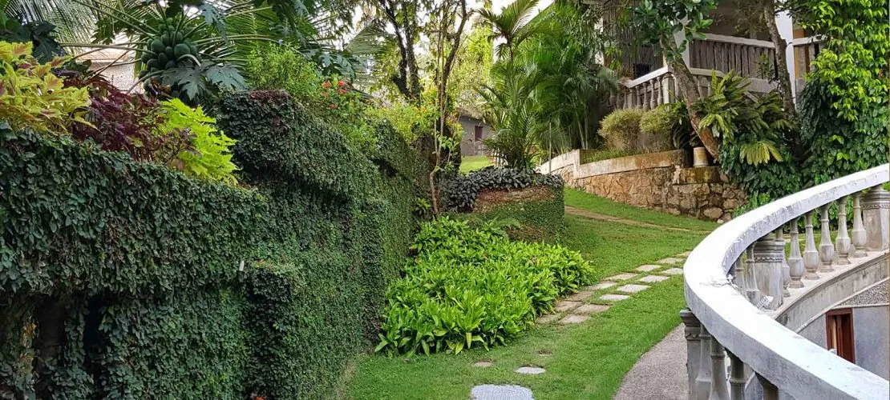
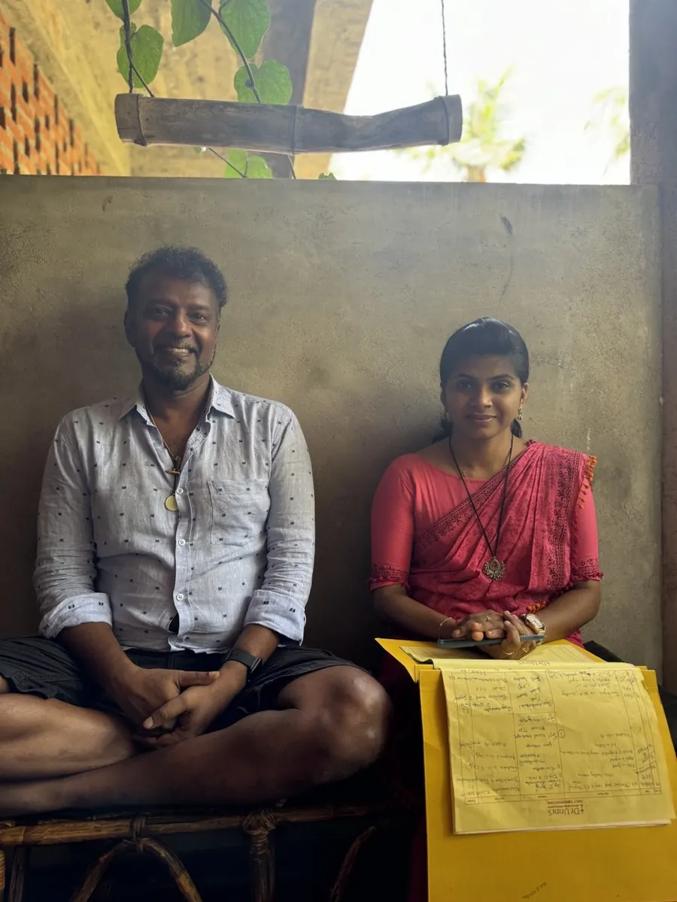
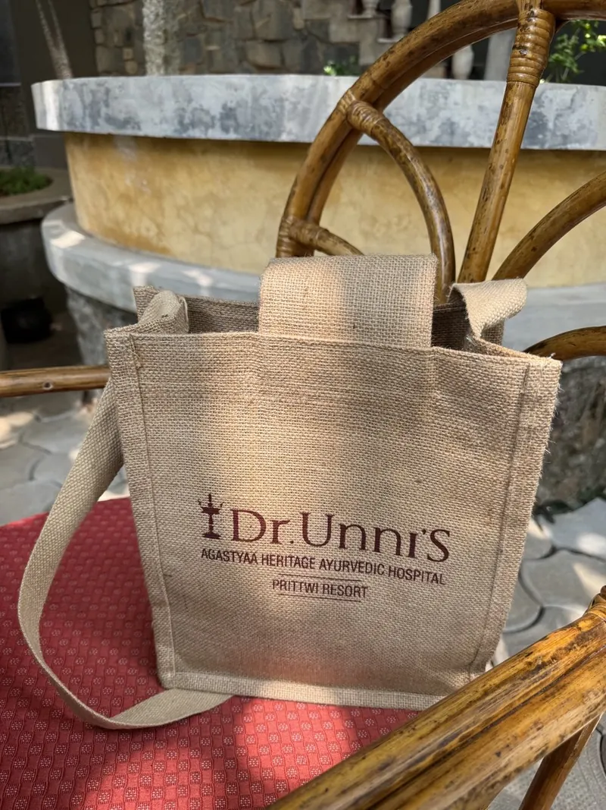
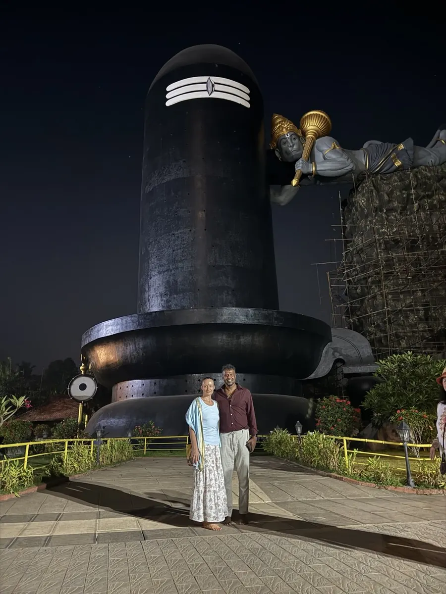
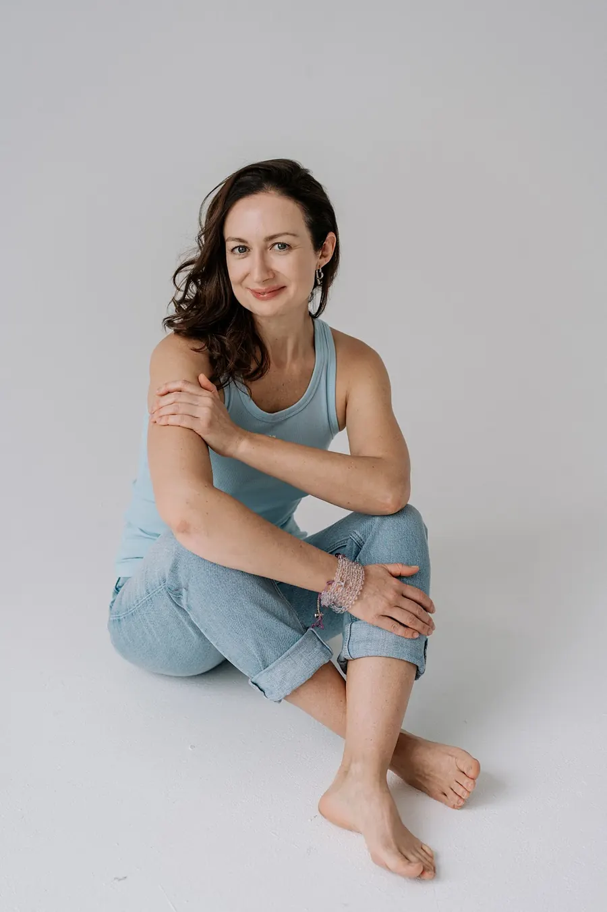
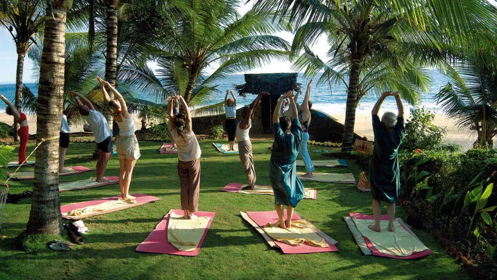

Уйдёт хроническая усталость
Тяжесть, с которой вы живёте месяцами, снимается слой за слоем — масло, травы и тёплые руки делают своё дело.
Авторский аюрведа-йога-ретрит · Ковалам, Южная Индия
11 дней панчакармы в клинике доктора Унни. Очищение тела, перезагрузка ума. Программу назначает врач — индивидуально для вас.
10–21 марта 202712 дней / 11 ночей · Ковалам, Керала
Это не «отдых с массажами». Это глубокое аюрведическое очищение под ежедневным наблюдением врача — и вот что оно даёт.
Тяжесть, с которой вы живёте месяцами, снимается слой за слоем — масло, травы и тёплые руки делают своё дело.
Уже к середине программы большинство участников засыпает легко и просыпается до будильника, отдохнувшими.
Тело становится легче и подвижнее, кожа — свежее. Этот эффект панчакармы отмечают почти все, кто её проходил.
Без диет и насилия над собой: очищение, аюрведическое питание и движение запускают естественную саморегуляцию.
Март — идеальное время: из серости и холода — в солнце, океан и зелень. Вернётесь другим человеком.
Йога, пранаямы и медитации каждый день. Тише внутренний шум — яснее решения и желания.
Панчакарма переводится как «пять действий». Это классический аюрведический процесс детоксикации: за счёт масляных массажей, лечебных трав и очищающих процедур тело избавляется от накопленных токсинов и помогает себе восстановиться.
Аюрведа — древнеиндийская «наука о жизни» — смотрит на человека целиком: тело, ум и образ жизни. Поэтому панчакарма работает не с симптомами, а с причинами усталости и тяжести.
Главное: программа не «пакетная». Каждый день перед процедурами — приём у доктора Унни. Он отслеживает ваше самочувствие и назначает процедуры с учётом ваших личных особенностей.
Аюрведические процедуры не являются медицинской услугой на территории РФ и не заменяют лечение. Имеются противопоказания — необходима консультация врача. Программа в клинике назначается доктором индивидуально после очной консультации.


Люди едут не «в Индию» — они едут к врачу, которому доверяют.

Клинику доктора в народе так и называют — «клиника доктора Унни». Тихая, чистая и ухоженная, с квалифицированным и дружелюбным персоналом. Лучшее на сегодня соотношение цены и качества среди аюрведических клиник Кералы.



Массаж руками или ногами со специально приготовленными на лекарственных травах маслами — за процедуру расходуется от 1,5 до 3 литров. Одновременно идёт диагностика: с удивительной точностью выявляются проблемные места опорно-двигательной системы. Около 1 часа.
Делается синхронно в четыре руки: один массажист работает, второй постоянно меняет и подогревает мешочки с травами и крупами, сохраняя температуру воздействия. Активно прорабатываются мышцы, суставы и зона вдоль позвоночника. Около 30 минут.
Завершающий массаж порошком из сухих трав, тоже в четыре руки. Тонизирует кожу и завершает разогрев тканей. Около 30 минут.
Назначаются врачом индивидуально: мягкое очищение выводит из организма токсины, размягчённые и подготовленные масляными процедурами. При необходимости доктор подбирает травяные препараты.
Мягкие практики с Татьяной идеально сочетаются с аюрведическими процедурами и подходят любому уровню подготовки — в том числе тем, кто никогда не занимался йогой.
Перечень — примерный: вашу личную программу назначает доктор после очной консультации. Аюрведические процедуры не являются медицинской услугой на территории РФ и не заменяют лечение.
Прилёт в Тривандрум, трансфер в Ковалам, размещение. Первая консультация с доктором Унни — он составит вашу личную программу. Отдых у океана.
Ежедневно: приём у врача и ~3 часа процедур в клинике Agastyaa Heritage, мягкая йога и пранаямы, свободное время на лучших пляжах южной Индии. Экскурсии — по желанию.

Вишенка программы — экскурсия в Ченкал: самый большой Шивалингам в мире, 111 футов — высотой с 10-этажный дом, на территории храма Шивы и Парвати.
Завершение программы, финальные рекомендации доктора — что поддерживать дома. Трансфер в аэропорт Тривандрума и вылет 21 марта.
Два отеля на выбор. Стоимость зависит от размещения — программа в клинике одинакова для всех.
Уютная вилла рядом с клиникой
1650 €2-местное
1850 € — 1-местное
Выбор большинства
Sea View · отель при клинике, аюрведическое питание включено
2150 €2-местное
2650 € — 1-местное
Номеров мало
Panoramic Sea View · панорамный вид на океан
2450 €2-местное
2850 € — 1-местное
Меня зовут Татьяна Ищенко. Я преподаватель йоги, практик медитации и организатор путешествий по сакральным и красивым местам планеты.
В Кералу я приезжаю не первый год и знаю здесь всё: клинику, докторов, отели, пляжи и лучшие места для заката. Я встречу вас в аэропорту, помогу на консультациях с врачом, проведу практики и буду рядом всю поездку — вам не нужно знать английский и разбираться в Индии.
Каждое утро мы будем практиковать йогу и пранаямы под пальмами, а вечерами — встречать закат над океаном. Приезжайте — Керала умеет возвращать к себе.


«Здесь будет реальный отзыв участницы прошлого тура — текст или скриншот из Telegram.»
«Здесь будет реальный отзыв участника прошлого тура — текст или скриншот из Telegram.»
«Здесь будет реальный отзыв участницы прошлого тура — текст или скриншот из Telegram.»
Нет. Программа подходит людям без опыта аюрведы и йоги. Единственное пожелание — за неделю до поездки постараться есть легче и пить больше воды, так очищение пройдёт мягче. Подробные рекомендации пришлём после бронирования.
Да, как у любых интенсивных оздоровительных практик. Беременность, острые состояния, недавние операции и ряд хронических заболеваний требуют осторожности. Именно поэтому программа начинается с очной консультации доктора — он подбирает процедуры под ваше состояние или мягко их ограничивает. Если сомневаетесь, напишите нам и проконсультируйтесь со своим врачом до поездки.
Подойдёт. Практики на ретрите мягкие, без акробатики, с вниманием к каждому. Татьяна — опытный преподаватель и даёт варианты под любой уровень. Многие участники впервые встают на коврик именно в Керале.
Прилетаете в аэропорт Тривандрума (Thiruvananthapuram, TRV) — удобные стыковки через Дубай, Шарджу, Абу-Даби или Дели. Перелёт обходится примерно в 800 $. В аэропорту вас встретит групповой трансфер — дорога до Ковалама занимает около 30 минут.
Да, электронная виза Индии оформляется онлайн за несколько дней, стоит около 30 $. Поможем с заполнением анкеты.
Керала — самый спокойный, чистый и образованный штат Индии, привычный к гостям со всего мира. Ковалам — курортный посёлок, клиника — тихая закрытая территория. Плюс вся группа всё время с русскоязычным организатором: от аэропорта до аэропорта вы не остаётесь одни.
Лёгкую одежду из натуральных тканей, купальник, головной убор, солнцезащитный крем, удобную обувь и одежду для практик. Перед поездкой пришлём подробный список. Масла и всё для процедур выдают в клинике.
Конечно — так едет примерно половина группы. Можно взять 1-местное размещение или подселиться к кому-то из группы по 2-местному тарифу (поможем найти соседа).
Предоплата 1000 € закрепляет за вами место — наличными при встрече или переводом в рублях по курсу. Остаток вы оплачиваете наличными уже по прилёте в Кералу. До 10 декабря 2026 предоплата полностью возвратная.
Количество мест ограничено: номеров с видом на океан мало, а до 10 декабря 2026 предоплата полностью возвратная. Напишите — расскажем о свободных номерах и ответим на вопросы.
Татьяна Ищенко · WhatsApp +7 921 411-72-70